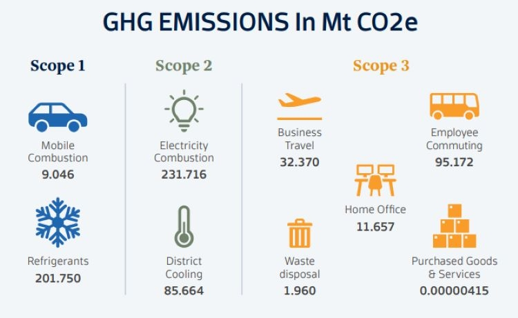

SICO implemented its Responsible Investment Policy. This policy marks a significant milestone in SICO’s commitment to sustainable investing and integrating environmental, social, and governance (ESG) considerations into its investment decision-making process.
The Responsible Investment Policy outlines SICO’s ESG investment approach, which includes compliance with applicable laws, consideration of climate change, gender equality, local community development, and corporate governance as additional risk factors. The organization also emphasizes the importance of engaging with companies to protect and represent clients' interests effectively. The integration of ESG considerations is tailored to the specific investment decision processes within each department, with a primary focus on risk mitigation and capitalizing on opportunities.

SICO released its second GHG report, a crucial step in measuring and monitoring its impact on the environment. The report quantifies the carbon emissions resulting from the Bank’s daily activities and operations, providing valuable insights into its environmental footprint.
The bank improved the transparency of its GHG reporting by including additional disclosures in the latest report. These include figures from the Saudi office, documentation of district cooling value, actual paper consumption figures, and partial release of purchased goods and services data. The report also accounts for emissions from SICO’s new offices, as the relocation occurred during the reporting period.
The bank’s new employee saving scheme (ESS) allows employees to opt into a savings plan by designating a portion of their monthly base pay with a guarantee that SICO will match the amount with a cash contribution of a similar amount, subject to a maximum cap and a vesting period. Employees will be able to select one of three global options (aggressive, moderate, conservative) according to their personal investment needs. SICO’s Global Markets team will invest the savings in diversified, low-cost liquid investments that are ring-fenced according to international best practice. The ESS, which is expected to officially launch in Q1 2023, was designed in consultation with multinational insurance company, Aon.
During the holy month of Ramadan, SICO’s staff collected 90 food boxes for distribution to needy families in Bahrain. Each of these food boxes contained essential food items to support families in need. We hope that this contribution helped alleviate some of the struggles that many families are facing. As a socially responsible organization, we wanted to do our part in supporting our communities during Ramadan.
Turkey and Syria were hit by devastating earthquakes earlier this year, resulting in the loss of lives and displacement of thousands of people. SICO decided to make a donation to the relief efforts launched by the Royal Humanitarian Foundation in Bahrain. The bank also invited its employees to participate by donating goods to the Syrian and Turkish embassies in Bahrain.